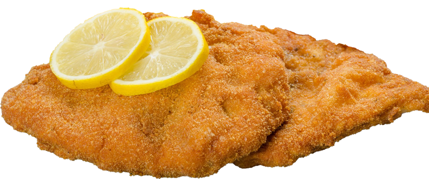

SCHNITZEL RECIPE
LEVEL:easy
Ingredients:
- Chicken breast
- 2 eggs
- Breadcrumbs
- Salt and papper
- Oil
- Ketchup sauce/barbecue sauce
Preparetions:
- Cut the chicken breast into thin and large slices
- Pour the eggs and mix it in a bowl. also make a plate with breadcrumbs, salt and papper
- Soak the chicken bbreast in the bowl of eggs, then place it on the plate with the salt, papper and breadcrums, let them stich the the chicken breast
- Heat oil in a high pan, and then fry the schnitzel
- When yo finish frting, place the schnitzel on absorbent paper and let t cool a little
- Serve the schnitzel with a sause of your choice

bon apetit!